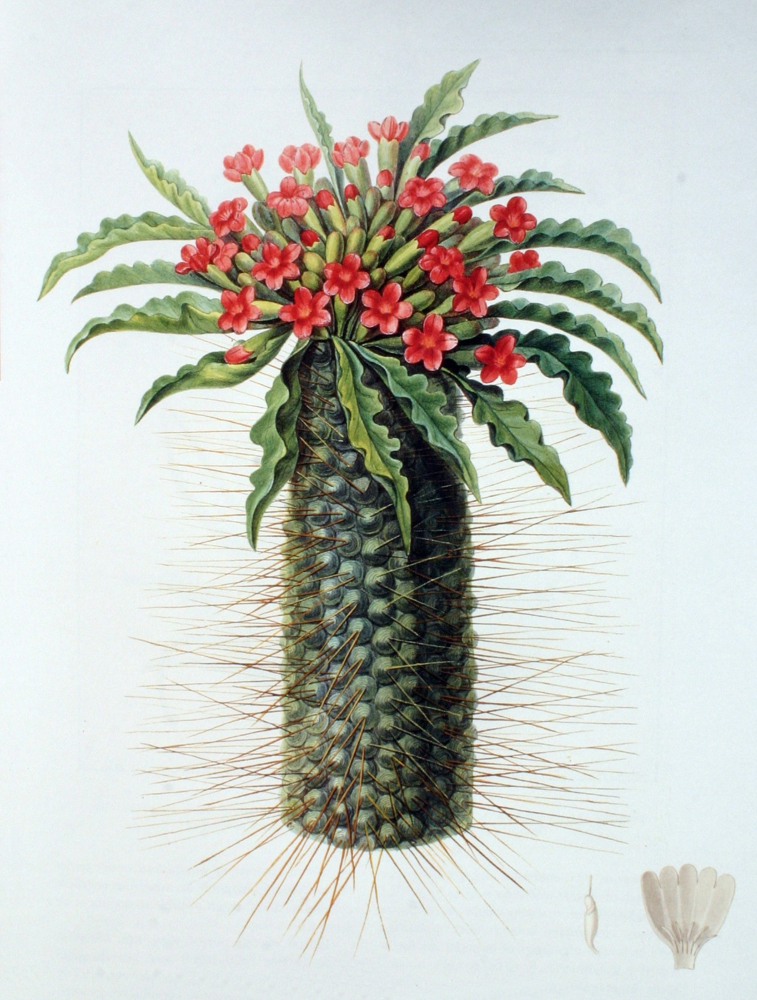
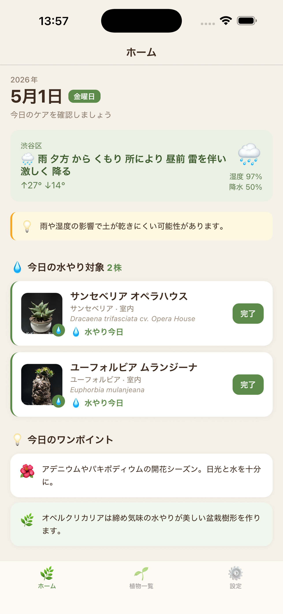
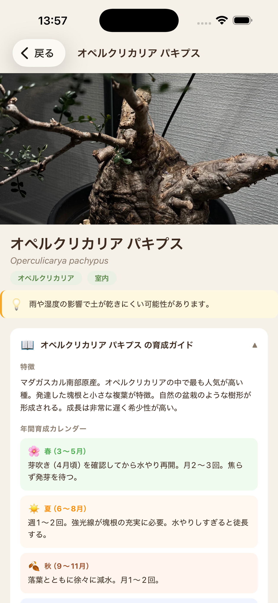
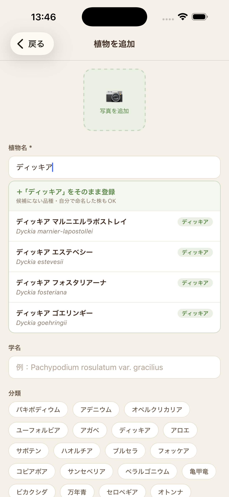

多肉植物・コーデックスのための、小さな育成記録帖。
水やりリマインダー・天気に寄り添うケア・130種以上の植物データ。
毎日の世話の相棒に、iPhone に1つ。
130 種以上の植物データベース
Plate No. 001

多肉・コーデックス栽培の「あるある」
コーデックスは水やり頻度が命。記憶に頼ると休眠期にうっかりやらかす。
梅雨・真夏・冬の休眠で対応が違うのに、判断が毎回手探り。
パキポ、オペルクリカリア、亀甲竜…品種ごとの育て方を毎回ググる手間。
10株超えると「どの子をいつ水やりした」が頭で追えなくなる。
3つの主要機能で、毎日の世話がラクになる
株ごとに水やり間隔を設定。次回タイミングを通知でお知らせ。複数のリマインドを朝・夕など使い分けOK。

GPS または都道府県設定で今日の天気・湿度を取得。雨の日は水やり控えめ・乾燥日は霧吹き、など季節と天候に合わせたヒントを表示。

パキポディウム、アデニウム、オペルクリカリア、亀甲竜など、22カテゴリ・130種以上の品種データを収録。最高管理温度・水やり目安も品種別。

基本機能はずっと無料・クラウド同期だけプレミアム
使い始める前に、気になるポイント
はい、iPhone・iPad に対応しています。Android版・Web版は需要次第で検討中です。
はい、水やり管理・リマインダー・天気連動・育成ガイドはすべて無料で使えます。プレミアム（¥780/年）はクラウド同期だけの違いです。
無料プランの場合はローカル保存なので、iCloudバックアップから復元するか、新端末で再入力が必要です。プレミアムプランならクラウド同期で自動的に新端末に引き継げます。
多肉植物・コーデックス・サボテン・塊根植物・観葉植物まで22カテゴリ、130種以上の品種データを内蔵しています。リストにない品種も自由に登録できます。
気象庁（JMA）のオープンデータと Open-Meteo の湿度データを組み合わせています。全47都道府県対応・無料・広告なしで動作します。
iPhoneの「設定」→「Apple ID」→「サブスクリプション」からいつでも解約できます。解約後も無料機能は引き続きお使いいただけます（クラウド同期は停止）。
無料プランは端末ローカルのSQLiteに保存。プレミアムプランのクラウド同期は Supabase（暗号化通信）で保管します。プライバシーポリシーはこちら。
support@upthemoon.co.jp までメールでお問い合わせください。通常2〜3営業日以内にご返信いたします。
無料プランの利用にはサインイン不要です。プレミアムプランのクラウド同期を使う時のみ、Apple Sign-In でログインしていただきます。
App Store経由のお支払いとなるため、領収書はApple側から発行されます。「設定 > Apple ID > 購入履歴」から確認・PDFダウンロードが可能です。
ご質問・要望・不具合報告など、お気軽にどうぞ